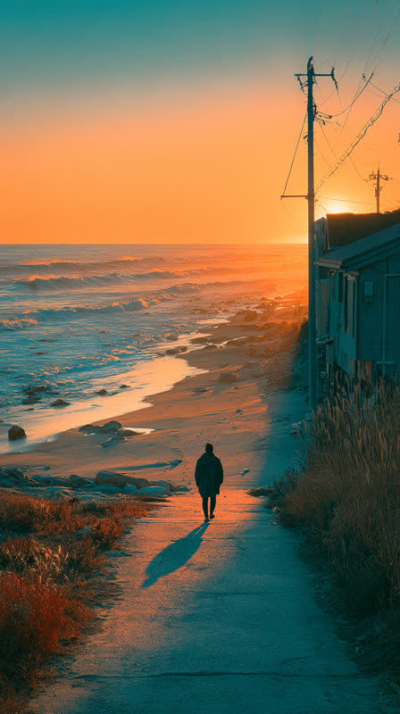

Screens / 04
UniverseView
— 3D 地球＋サークル別プレイリスト
glass: yes — 上部ボタン2＋circle bar＋edit（計4形状 ≤6）
no(perf) — リールのセル / 3D 連動ピン
glass は
再描画の少ない chrome だけ
: 右上アイコンボタン・下端の
WdCircleFooter
（circle bar＋edit）。カメラは
--gradient-colorful
（アクセント＝glass 外）。3D 地球に連動して毎フレーム動く
ピン群
と、横スクロールする
プレイリストのセル
は glass 禁止 — セルは
--surface-raised
＋scrim の従来面。menu sheet 面は comp-15 参照（開いた時 glass 1枚追加で計5 ≤6）。

デバッグ太郎
渋谷コミュニティ
12 posts
2分前
1時間前
3時間前
昨日
9:41